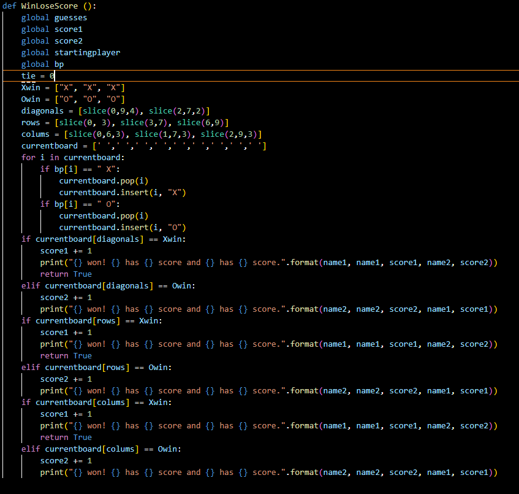

2. WinLoseScore
Development
This is a function that decides if the current board position is a win for someone, loss for another, and if its a draw. As well as figuring out what the board position means it will also count the score. 1 point for the winner 0 for the loser, and 0.5 each for a draw.

Testing
I need to change the length of my arms due to them looking small and off proption when next to the torso. I will do this by increasing the length and width of the upper and lower arm until it looks in proportion next to the torso.
| Test/Input | Expectation | Output |
|---|---|---|
| a | Recognises as correct and proceeds |  |
| A | Recognises as correct and proceeds | |
Feedback
Where should the character's arms be improved?
"Make the shoulders less pointy and more natural. They look like they have a flat spike at the top"
Improvements
I improved the shoulder to make it look more rounded at the top and more natural. The other change that I made was the size of the arms. I changed the scale to make it look more in proportion and not look weird. Now the 3D character looks a lot better without too much change.